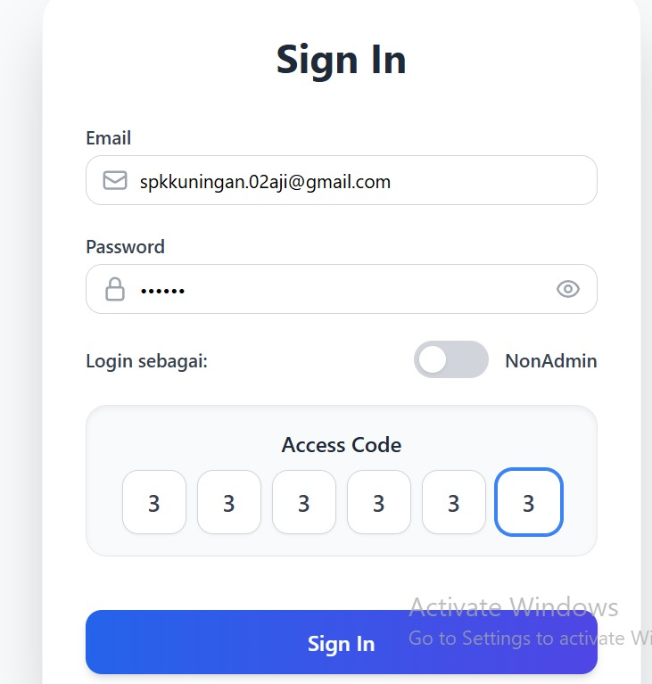

LANGKAH-LANGKAH UNTUK MEMBUKA APLIKASI RADAR SPK KUNINGAN
CROXY PROXY
Buka Google Chrome , Lalu ketik Croxy Proxy dan Pilih sesuai Gambar diatas
hub.radarku.com
Masukan di kolom search "hub.radarku.com" Lalu pilih "GO" atau "Pergi" disebelah kanan pencarian.
EMAIL DAN PASSWORD
Masukan email : Sesuai email kerja masing masing Paswword : 123456 lalu Centang login sebagai admin = non admin masukan Code 333333 TAMPILANNYA SEPERTI INI YA ADICK ADICK
SILAHKAN MENGOLEK YA ADICK ADICK SEKALIAN MUACH SALAM DARI KAKA SALAM DARI BINJAI JAYA JAYA KAYA AHAY DEUH :)